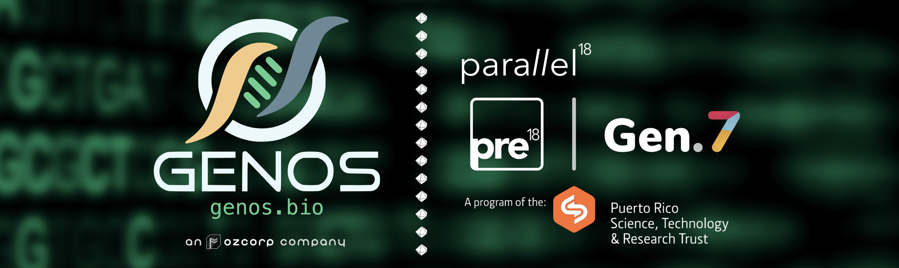
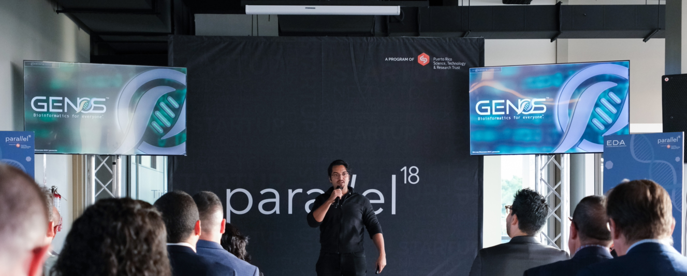
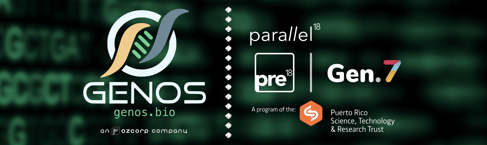
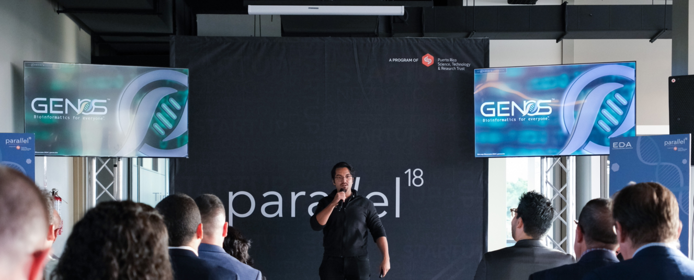

GENOS selected for Parallel18’s pre18 program to strengthen market entry and expand operations.
December 18, 2024 – Press
SAN JUAN, PUERTO RICO – GENOS, a computational biology and full-service bioinformatics contract research organization (CRO), has been selected to join the seventh generation of pre18, the flagship pre-acceleration program by Parallel18, part of the Puerto Rico Science, Technology, and Research Trust (PRSTRT, prsciencetrust.org). GENOS is one of 24 startups chosen from over 200 applicants to receive a $25,000 equity-free grant and a 12-week business education and mentorship curriculum.

This event marks a value milestone for GENOS, which has been focusing on developing software and expanding its outreach to biotech R&D teams at key research organizations in Puerto Rico, most of whom are seeking custom tailored bioinformatics solutions. GENOS helps wetlab investigators develop projects driven by high-throughput computation, and delivers comprehensive interactive reports for Omics Data Analysis, Molecular Dynamics, and Translational Studies, addressing the increasing demand for scalable and efficient bioinformatics services. The $25,000 grant from pre18 will strengthen GENOS’ operational runway, allowing the company to continue expanding its presence in Puerto Rico, increase targeting of U.S. markets, and grow its initial core team. Additionally, the grant strengthens GENOS' position as the first and only pure-play computational biology company in Puerto Rico. GENOS is currently a registered bidder with the University of Puerto Rico School of Medicine, where it has already began to promote its services and support local academic research initiatives through computational modeling, enabling access to deep data science endeavors for wetlab investigators.
“Being selected for the program is a milestone for the company and highlights the role bioinformatics plays in scientific research, particularly in biodata modeling and molecular assets development. This program [pre18] will enable us to understand how to better serve the biotech organizations in Puerto Rico. We are proud to continue to be part of the Parallel18 ecosystem, having had already participated in the first generation of the EDA-sponsored BioLeap Life Sciences Accelerator Program. ” – said Dr. Osvaldo D. Rivera, Founder and CEO of GENOS LLC. Overall, the Pre18 funding supports operational continuity and allows GENOS to meet the increasing workloads of product development & market entry for its first bioinformatics-as-a-service (BaaS) application. The funding will specifically enable GENOS to retain its current talent, unlocking the potential for further incentives from the Puerto Rico Department of Economic Development and Commerce (DDEC) currently essential to accelerate operations. GENOS is on a mission to bridge gaps in local bioinformatics capacity and help organizations in Puerto Rico streamline complex data analysis workflows. Finally, with a strong business foundation and evolving collaborative support from local organizations, GENOS will leverage its resources to begin entry into major U.S. biotech hubs, where demand for cost-effective bioinformatics CRO services continues to grow.

Photo: GENOS founder Dr. Osvaldo D. Rivera presenting at the 2024 BioLeap Showcase, a pitch-style presentation to a cohort of founders, investors, directors, and the local entrepreneurial ecosystem at large.
Parallel18’s pre18 program is known for its dedicated support of local Puerto Rico-based startups, offering financial resources, mentorship, and access to business networks that foster sustainable growth. Through its network, GENOS’ seeks to enhance computational research capabilities for local institutions and biotech companies, driving innovation in science and technology while strengthening Puerto Rico’s position in the global landscape of bioinformatics and in-silico biology.
About GENOS: [ Website | LinkedIn ]
GENOS is a forward-thinking bioinformatics-as-a-service company enabling investigators to design and execute cutting-edge high-throughput data analyses without a significant investment in laboratory personnel, effectively reducing R&D bottlenecks and allowing the workforce to fully focus on executing assays and boosting revenue. GENOS is an organization conceptualized and actively being built by the Ozcorp Scientific biotech venture studio.
About Ozcorp Scientific [ Website | LinkedIn ]
Ozcorp Scientific is a sole-prop technology firm dedicated to undertaking the establishment of new ventures, empowering lean business models, delivering tools to the market, and investing in the most promising ideas.
For media inquiries, please contact:
media@ozcorp.io

This event marks a value milestone for GENOS, which has been focusing on developing software and expanding its outreach to biotech R&D teams at key research organizations in Puerto Rico, most of whom are seeking custom tailored bioinformatics solutions. GENOS helps wetlab investigators develop projects driven by high-throughput computation, and delivers comprehensive interactive reports for Omics Data Analysis, Molecular Dynamics, and Translational Studies, addressing the increasing demand for scalable and efficient bioinformatics services. The $25,000 grant from pre18 will strengthen GENOS’ operational runway, allowing the company to continue expanding its presence in Puerto Rico, increase targeting of U.S. markets, and grow its initial core team. Additionally, the grant strengthens GENOS' position as the first and only pure-play computational biology company in Puerto Rico. GENOS is currently a registered bidder with the University of Puerto Rico School of Medicine, where it has already began to promote its services and support local academic research initiatives through computational modeling, enabling access to deep data science endeavors for wetlab investigators.
“Being selected for the program is a milestone for the company and highlights the role bioinformatics plays in scientific research, particularly in biodata modeling and molecular assets development. This program [pre18] will enable us to understand how to better serve the biotech organizations in Puerto Rico. We are proud to continue to be part of the Parallel18 ecosystem, having had already participated in the first generation of the EDA-sponsored BioLeap Life Sciences Accelerator Program. ” – said Dr. Osvaldo D. Rivera, Founder and CEO of GENOS LLC. Overall, the Pre18 funding supports operational continuity and allows GENOS to meet the increasing workloads of product development & market entry for its first bioinformatics-as-a-service (BaaS) application. The funding will specifically enable GENOS to retain its current talent, unlocking the potential for further incentives from the Puerto Rico Department of Economic Development and Commerce (DDEC) currently essential to accelerate operations. GENOS is on a mission to bridge gaps in local bioinformatics capacity and help organizations in Puerto Rico streamline complex data analysis workflows. Finally, with a strong business foundation and evolving collaborative support from local organizations, GENOS will leverage its resources to begin entry into major U.S. biotech hubs, where demand for cost-effective bioinformatics CRO services continues to grow.

Photo: GENOS founder Dr. Osvaldo D. Rivera presenting at the 2024 BioLeap Showcase, a pitch-style presentation to a cohort of founders, investors, directors, and the local entrepreneurial ecosystem at large.
Parallel18’s pre18 program is known for its dedicated support of local Puerto Rico-based startups, offering financial resources, mentorship, and access to business networks that foster sustainable growth. Through its network, GENOS’ seeks to enhance computational research capabilities for local institutions and biotech companies, driving innovation in science and technology while strengthening Puerto Rico’s position in the global landscape of bioinformatics and in-silico biology.
About GENOS: [ Website | LinkedIn ]
GENOS is a forward-thinking bioinformatics-as-a-service company enabling investigators to design and execute cutting-edge high-throughput data analyses without a significant investment in laboratory personnel, effectively reducing R&D bottlenecks and allowing the workforce to fully focus on executing assays and boosting revenue. GENOS is an organization conceptualized and actively being built by the Ozcorp Scientific biotech venture studio.
About Ozcorp Scientific [ Website | LinkedIn ]
Ozcorp Scientific is a sole-prop technology firm dedicated to undertaking the establishment of new ventures, empowering lean business models, delivering tools to the market, and investing in the most promising ideas.
For media inquiries, please contact:
media@ozcorp.io